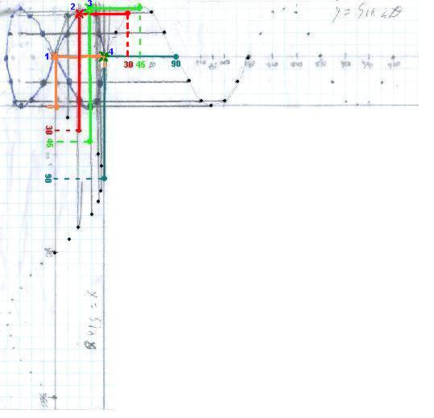

{kind=link}

Ian, a 4th grader, adds sine waves at right angles to make a bowtie
Ian has worked on graphing sine waves for about two months. See Don's beginning Trig to see how this can be done. He made a sine wave, then made one twice the amplitude (twice as tall), one twice the frequency (2 waves in 360o) and moved the sine wave to the right and left (phase changes). After doing these on graph paper by hand, he used Derive to make these changes on the computer.
At one point Don showed Ian the output of an oscillator on an oscilloscope screen. (see Jonathan at the oscillator and oscilloscope). Ian played with changing the frequency of the oscillator, then both the frequencies of the oscillator as well as on the oscilloscope. Ian saw a bowtie (among other things) on the oscilloscope screen, made by the two waves at right angles, where one wave is twice the frequency of the other. Don showed Ian how to add y = sin (2q) and x = sinq on graph paper. Don didn't do a good job at first, because Ian got confused and he plotted points that were not supposed to be there. Then Don worked with Ian again and he got it all worked out. It took at lot of patience and persistence on his part. His results are shown below. Fine job, Ian!
Don took Ian's graph and used it to show how the bowtie came about from the 2 sine waves, below. There was a blank space in the upper left hand corner square of the graph paper (an 8x8 square). The equation y = sin (2q) was graphed starting at the right side of this square, going to the right. On both graphs the scale was from -1 to 1 with .25 for each little square. The equation of x = sinq was graphed starting at the bottom of the square, going down The scale for q was each square was 15'. Don picked only 4 points (x's) on the bowtie at 1, 2, 3 and 4 from 0', 30' , 45', and 90' on the two graphs. He started on the y = sin (2q) graph at 0', and drew a line to the left. Then he started on the x = sinq at 0' and went up until it met the other orange line; these 2 lines met at point 1, the x. To get point #2, he started on the y = sin (2q) graph at 30' (went up the dotted line to the graph), then draw a line to the left. Then he started on the x = sinq graph at 30' ( the dotted line to the right to the graph) and draw a line up to where it meets the other red line; these 2 lines meet at point 2, the x. Don shows how to get the x's at points 3 and 4 by continuing along each curve to 45', and 90', again going to the left and up each time. This is how Ian did the rest, every 15', to obtain the bowtie.

Then Don got out the compound sand pendulum with sand in a catsup bottle, drawn here by Sheri. It is really two pendulums made with a double length of string, one from the floor to the top of the Y where it is attached by tacks to perpendicular walls (and the two lengths are adjustable by means of 2 knots -not shown here). The other pendulum is from the floor to the middle of the Y, also adjustable, by an alligator clip.
The compound pendulum acts like the oscillator and oscilloscope where one can change the frequencies, by changing the lengths of the pendulums. With the compound sand pendulum Ian created a pretzel, like that below:
Don showed Ian that if one went across the figure it would intersect the pretzel 4 places (ideally), and if one went down, it would intersect the pretzel in 3 places. So the ratio of the frequencies of the two pendulums is 4:3. (There is a relationship between the lengths of the pendulums and the frequencies of the waves produced, which they did not explore at this time).